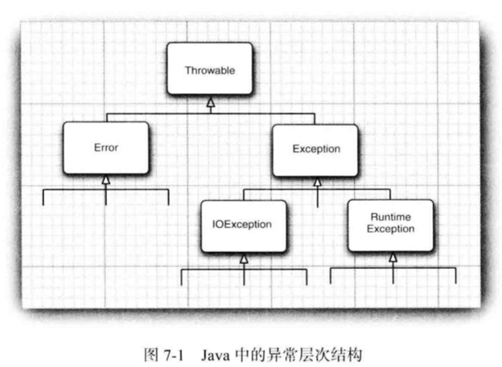

7.1 处理错误
异常处理的任务是将控制权从错误产生的地方转移给能够处理这种情况的错误处理器。需要关注的错误一般有：
- 用户输入错误：键盘输入错误或不符合程序要求的输入错误。
- 设备错误：硬件的错误。
- 物理限制：存储空间耗尽等。
- 代码错误：程序无法正确执行，比如方法返回错误，调用错误，数组索引不合法等。
Java中如果某个方法不能够正常完成，可以通过另一个路径退出，这种情况下方法不会返回任何值，而是抛出（throw）一个封装了错误信息的对象。这时方法会立即退出，不返回任何值，调用这个方法的代码也无法继续执行，异常处理机制开始搜索能够处理这种异常状况的异常处理器（exception handler）。
7.1.1 异常分类

所有异常都派生于Throwable类，分为Error和Exception。
Error类层次结构描述了Java运行时系统的内部错误和资源耗尽错误，程序不能抛出这种类型的对象。
Exception类层次结构分为由程序错误导致的异常：RuntimeException；程序本身没问题但由于像I/O错误导致的其他异常。
派生于RuntimeException的异常包含：
- 错误的类型转换
- 数组访问越界
- 访问null指针
不派生于RuntimeException的异常包含：
- 试图在文件尾部后读取数据
- 试图打开一个不存在的文件
- 试图根据给定的字符串查找Class对象，但是这个字符串表示的类并不存在
前者取决于程序员自身，后者取决于客观环境。
Java语言规范将派生于Error类或RuntimeException类的所有异常称为非受查异常（unchecked），其他的异常称为受查异常（checked）。编译器将核查是否为所有的受查异常提供了异常处理器。
7.1.2 声明受查异常
方法应该在其首部声明可能抛出的异常。但是不需要声明Java内部错误即从Error继承的错误（不可控制），也不应该声明从RuntimeException继承的非受查异常（尽量避免发生）。声明多个抛出异常时用逗号分隔。
public FileInputStream(String name) throws FileNotFoundException
注意：如果在子类中覆盖了超类的一个方法，子类方法中声明的受查异常不能比超类方法中声明的异常更通用（即子类方法可以抛出更特定的异常或不抛出任何异常）。如果超类方法没有抛出任何受查异常，子类也不能抛出任何受查异常。
如果类中的一个方法声明将会抛出一个异常，这个异常是某个特定类的实例，那么这个方法将可能抛出这个类的异常，或者这个类的任意一个子类的异常。例如声明抛出IOException，但实际可能抛出的是它的子类异常FileNotFoundException。
7.1.3 如何抛出异常
对一个已经存在的异常类，将其抛出需要：
- 找到一个合适的异常类；
- 创建这个类的一个对象；
- 将对象抛出。
String readData(Scanner in) throws EOFException{
...
while (...){
// EOF encountered
if(!in.hasNext()) {
if (n<len)
throw new EOFException();
}
...
}
return s;
}7.1.4 创建异常类
程序中碰到任何标准异常类不能充分描述清楚问题的时候，需要创建自己的异常类，即定义一个派生于Exception或派生于Exception子类的类。
自定义异常类需要包含两个构造器，一个是默认构造器，一个搜索带有详细描述信息的构造器（使用 Throwable的toString方法可以打印这些信息）。
class FileFormatException extends IOException{
public FileFormatException(){}
public FileFormatException(String gripe){
super(gripe);
}
}7.2 捕获异常
某个异常发生后没有在任何地方进行捕获，程序会终止执行，并在控制台打印异常信息，包括异常类型和堆栈内容。
捕获异常使用try/catch语句块。
try{
code
more code
}
catch (ExceptionType e){
handler for this type
}如果在try语句块中代码抛出了一个在catch字句中说明的异常：
- 程序将跳过try语句块的其余代码。
- 程序执行catch子句中的处理器代码。
如果在try语句块中没有抛出任何异常，程序将跳过catch子句。
如果在try语句中抛出一个在catch子句中没有声明的异常类型，这个方法将会立刻退出。
7.2.2 捕获多个异常
在一个try语句块中可以捕获多个异常类型，并对不同类型的异常作出不同处理。
try{
code that might throw exceptions
}
catch(FileNotFoundException e){
emergency action for missing files
}
catch(UnknownHostException e){
emergency action for unknown hosts
}
catch(IOException){
emergency action for all other I/O problems
}e.getMessage()：获得异常对象的信息。
e.getClass().getName()：获得异常对象的实际类型
7.2.3 再次抛出异常与异常链
在catch子句中可以抛出一个异常，以改变异常的类型。
try{
access the database
} catch(SQLException e){
Throwable se = new ServletException("database error");
se.initCause(e);
throw se;
}这里将原始异常设置为新异常的原因。
也可以只记录异常然后重新抛出，不做任何改变。
try{
access the database
} catch(Exception e){
logger.log(level, message, e);
throw e;
}7.2.4 finally子句
无论是否有异常被捕获，finally子句中的代码都将被执行。finally子句可以用于处理异常抛出后程序中断造成的资源回收问题。
InputStream in = new FIleInputStream(...);
try{
// 1
code that might throw exceptions
// 2
} catch(IOException e){
// 3
show error message
// 4
} finally {
// 5
in.close();
}
// 6对于这段代码，有3种情况：
- 代码没有抛出异常。执行顺序为1、2、5、6。
- 抛出一个在catch子句中捕获的异常。执行顺序为1、3、4、5、6。
- 抛出一个没有在catch子句中捕获的异常。执行顺序为1、5。
try语句可以只有finally子句，而没有catch子句。
注意：如果finally子句包含return语句，会对方法返回造成问题。
public stati int f(int n){
try{
int r = n*n;
return r;
}finally{
if (n==2) return 0;
}
}如果try语句正常退出，finally子句中的返回值将覆盖之前的返回值。
7.2.5 带资源的try语句
open a resource
try{
work with the resource
}finally{
close the resource
}假设资源属于一个实现了AutoCloseable接口的类，Java SE 7为这种代码模式提供了一个快捷方式，AutoCloseable接口的方法：void close() throws Exception
try(Resource res = ...){
work with res
}这段代码是带资源的try语句（try-with-resources）的最简形式，块退出时会自动调用res.close()，而不再需要写finally子句。
7.2.6 分析堆栈轨迹元素
堆栈轨迹（stack trace）是一个方法调用过程的列表，它包含程序执行过程中方法调用的特定位置。当Java程序终止而没有捕获异常时就会显示堆栈轨迹。
Throwable类的printStackTrace方法可以访问堆栈轨迹的文本描述信息。
hrowable t = new Throwable();
StringWriter out = new StringWriter();
t.printStackTrace(new PrintWriter(out));
String description = out.toString();更灵活的方法是使用getStackTrace方法，得到StackTraceElement对象的一个数组，可以在程序中分析这个对象数组。
Throwable t = new Throwable();
StackTraceElement[] frames = t.getStackTrace();
for(StackTraceElement frame: frames)
analyze frameStackTraceElement类含有能够获得文件名和当前执行的代码行号的方法，同时还含有能够获得类名和方法名的方法。toString方法产生格式化字符串，其中包含所获得信息。
静态的Thread.getAllStackTrace方法，可以产生所有线程的堆栈轨迹。
Map<Thread, StackTraceElement[]> map = Thread.getAllStackTraces();
for(Thread t: map.ketSet()){
StackTraceElement[] frames = map.getClass(t);
analyze frame
}7.3 使用异常机制的技巧
- 异常处理不但能代替简单的测试。
- 不要过分地细化异常。
- 利用异常层次结构。
- 不要压制异常。
- 在检查错误时，“苛刻”比放任好。
- 不要羞于传递异常。
7.4 使用断言
7.4.1 断言的概念
断言机制允许在测试期间插入检查语句，代码发布时，这些检查语句会被自动移走。
断言关键字：assert：assert 条件;或assert 条件：表达式;
这两种形式都会对条件进行检测，如果结果为false，则抛出一个AssertionError异常。在第二种形式中，表达式会被传入AssertionError的构造器，并转换成一个消息字符串。
例如，断言x是一个非负数值：assert x>=0;
或者将x的实际值传递给AssertionError对象从而显示出x的实际值：assert x>=0:x;
7.4.2 启用和禁用断言
默认情况下，运行程序时断言被禁用，运行程序时使用-enableassertions或-ea选项启用：java -enableassertions MyApp。
启用或禁用断言不需要重新编译，因为启用或禁用断言是类加载器（class loader）的功能。断言禁用时，类加载器跳过断言代码。
也可以在某个类或整个包中使用断言：java -ea:MyClass -ea:com.mycompany.mylib... MyApp。这条命令开启MyClass类以及com.mycompany.mylib包和它的子包中的所有类的断言。
使用选项-disableassertions或-da禁用某个特定类和包的断言。
7.4.3 使用断言完成参数检查
Java处理系统错误的机制：
- 抛出异常
- 日志
- 使用断言
断言的使用时机：
- 断言失败是致命的、不可恢复的错误。
- 断言检查只用于开发和测试阶段。
7.5 记录日志
（略）
7.6 调试技巧
（略）